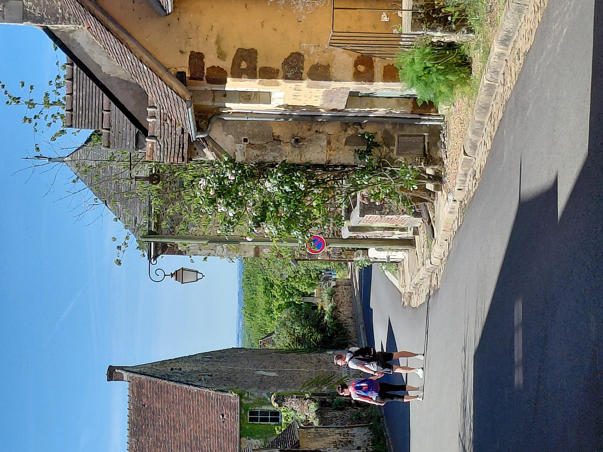
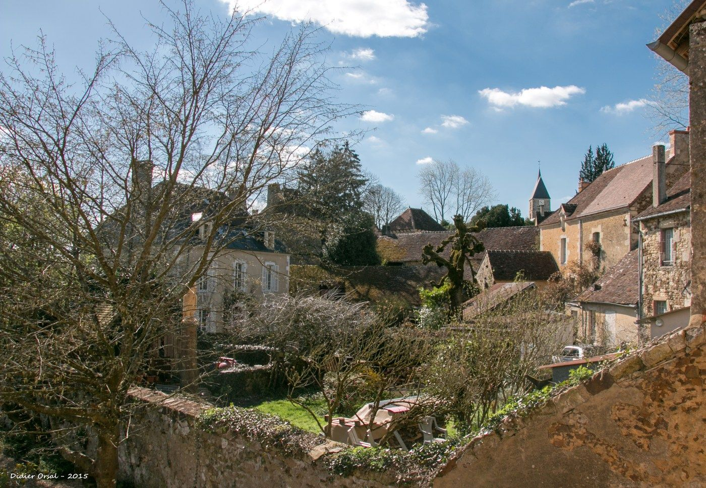
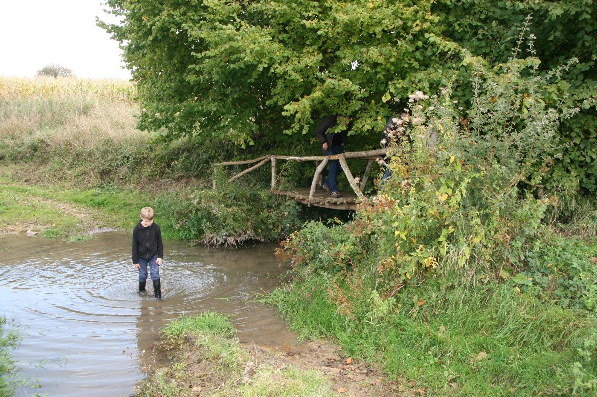

Un village millénaire, riche de son patrimoine historique et naturel unique, et étape du chemin du Mont-Saint-Michel (GR22).
Situé dans le Parc naturel régional du Perche, La Perrière est un village millénaire, riche de son patrimoine historique et naturel unique. Il est aussi une étape du chemin du Mont-Saint-Michel (GR22).
La Perrière est un village percheron qui a obtenu le label Petite Cité de Caractère®. De nombreuses ruelles dévoilent de belles et imposantes bâtisses, des façades colorées, la magie du site de l'éperon… La forêt de Bellême, le bocage avec ses prairies (vaches, moutons, percherons), les chemins creux et les trois manoirs de la commune vont vous séduire.

Notre village, surnommé également « La Perle du Perche », compte 230 habitants. Il est toujours animé grâce aux nombreux visiteurs mais aussi à ses artistes et ses commerçants. Vous pourrez vous restaurer facilement dans l'un des trois établissements (café de village, bar à vin et resto/salon de thé renommé) et faire un ravitaillement à l'épicerie du village, chez les boulangers bio ou bien encore dans l'une des épiceries fines. Les originales boutiques et les galeries d'artistes du bourg vous étonneront également…
En 2013, La Perrière a participé à la deuxième saison de l'émission de France 2, « Le Village préféré des Français », animée par Stéphane Bern, percheron d'adoption. Sélectionné pour représenter la région Basse-Normandie, notre bourg a su séduire par son riche patrimoine historique, l'authenticité de ses ruelles bordées de maisons aux façades colorées, ses majestueuses bâtisses, sa tradition du filet, son passé industriel, ainsi que par son dynamique marché d'art contemporain annuel et son panorama saisissant depuis le site de l'Éperon. Cette mise en lumière, diffusée en prime time, a offert une magnifique vitrine à ce superbe village.

Ne manquez pas nos rendez-vous annuels :
- l'Art à La Perrière, le week-end de la Pentecôte ;
- la Fête du Rosaire, le 1er dimanche d'octobre ;
- et les nombreux concerts qui ont lieu dans le cadre de festivals renommés (Les Musicales de Mortagne et du Perche, Les Musicales de l'Orne).


La Perrière est un petit village idéal pour se ressourcer et se mettre au vert dans un cadre bucolique et authentique, tout en profitant de ses commerces. Vous tomberez sous le charme de ce patrimoine bâti et naturel de toute beauté. Le tout à 2 h de Paris par la nationale 12 (sans péage).
Pour en savoir plus, nous vous invitons à consulter le site que nous avons dédié au village : www.laperriere.net, ainsi que notre rubrique Blog Perche Patrimoines.
La Perle du Perche — un vrai village vivant, à deux pas du Clos de la Fuie.